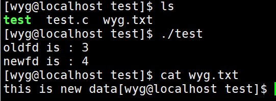

LINUX 基础IO
OPEN
1 |
|
0 & 1 & 2
Linux进程默认情况下会有3个缺省打开的文件描述符，分别是标准输入0，标准输出1，标准错误2.
0,1,2对应的物理设备一般是：键盘，显示器，显示器
1 | STDIN_FILENO：接收键盘的输入 |
重定向
fd 分配规则
1 | int main() |
以上第三行 close 执行后，write 往 fd 中写数据，显示器上不会显示，而回写入到文件中
分配规则：
- 系统会将012分配给标准输入，标准输出，标准错误。（因为底层要和硬件进行交互）
- 当我们提前关闭其中的一个时候会发现，fd 会选择下标小的进行分配。
- 这样也就引入了重定向
close(1) 执行之后，1就是最小的下标，open 一个文件通过文件描述符 fd 来描述，此时 fd 的值就为1，而后边向显示器中输入就会重定向到文件里。
例子
redirect
1 | int main() { |
1 | $ redirect |
dup 函数
有时候我们需要把标准输入重定向到一个文件，或者把标准输出重定向到网络连接（比如 CGI 编程），就可以通过 dup() 和 dup2() 来实现。
1 | int dup(int oldfd); |
dup() 示例
1 |
|

由结果可看出 oldfd 文件描述符为 3，newfd 文件描述符为 4，而 oldfd 和 newfd 都可以对 wyg.txt 文件进行操作。
复制文件描述符，实质应该理解为: oldfd 句柄原本指向 wyg.txt 的文件描述结构体，dup() 指向完毕后，newfd 句柄也会指向 wyg.txt 文件描述结构体。所以说对 newfd 句柄所指的文件操作，等价于操作 wyg.txt 文件。
dup2() 示例
dup2() 与 dup() 的区别在于可以用 newfd 来指定新描述符数值，若 newfd 指向的文件已经被打开，会先将其关闭。若 newfd 等于 oldfd，就不关闭 newfd，newfd 和 oldfd 共同指向一份文件。
1 | //int fd = open("./README.TXT",O_RDWR|O_APPEND,0777); |
实际上通过调用 dup2(fd,STDIN_FILENO);fd 和 STDIN_FILENO 之间建立了一种关系。本来所有函数的输出都要往终端输出哪里走，但是通过调用 dup2函数，终端输出关闭了（也就是若 newfd 原来已经打开了一个文件，则先关闭这个文件），那么终端输出关闭后这些输出往哪里去呢？当然是往我们新复制的文件描述符这里了。所有相当于是把 newfd 重定向至了 oldfd
Pipe 函数
1 |
|
pipe 函数定义中的 fd 参数是一个大小为 2 的一个数组类型的指针。
- 该函数成功时返回 0，并将一对打开的文件描述符值填入 fd 参数指向的数组。
- 失败时返回 -1并设置 errno。
通过 pipe 函数创建的这两个文件描述符 fd[0] 和 fd[1] 分别构成管道的两端，往 fd[1] 写入的数据可以从 fd[0] 读出。并且 fd[1] 一端只能进行写操作，fd[0] 一端只能进行读操作，不能反过来使用。要实现双向数据传输，可以使用两个管道。
如果管道的写端文件描述符 fd[1] 的引用计数减少至 0，即没有任何进程需要往管道中写入数据，则对该管道的读端文件描述符 fd[0] 的 read 操作将返回 0 (管道内不存在数据的情况)，即读到了文件结束标记 (EOF，End Of File)；反之，如果管道的读端文件描述符 fd[0] 的引用计数减少至 0，即没有任何进程需要从管道读取数据，则针对该管道的写端文件描述符 fd[1] 的 write 操作将失败，并引发 SIGPIPE 信号 (往读端被关闭的管道或 socket 连接中写数据)。
管道内部传输的数据是字节流，这和 TCP 字节流的概念相同。但它们又存在细微的差别。应用层程序能往一个 TCP 连接中写入多少字节的数据，取决于对方接受窗口的大小和本端的拥塞窗口的大小。而管道的话本身拥有一个容量限制，它规定如果管道的写端应用程序不将管道中数据读走的话，该管道最多还能被写入多少字节的数据。管道容量的大小默认是 65536 字节。我们也可以使用 fcntl 函数来修改管道容量。